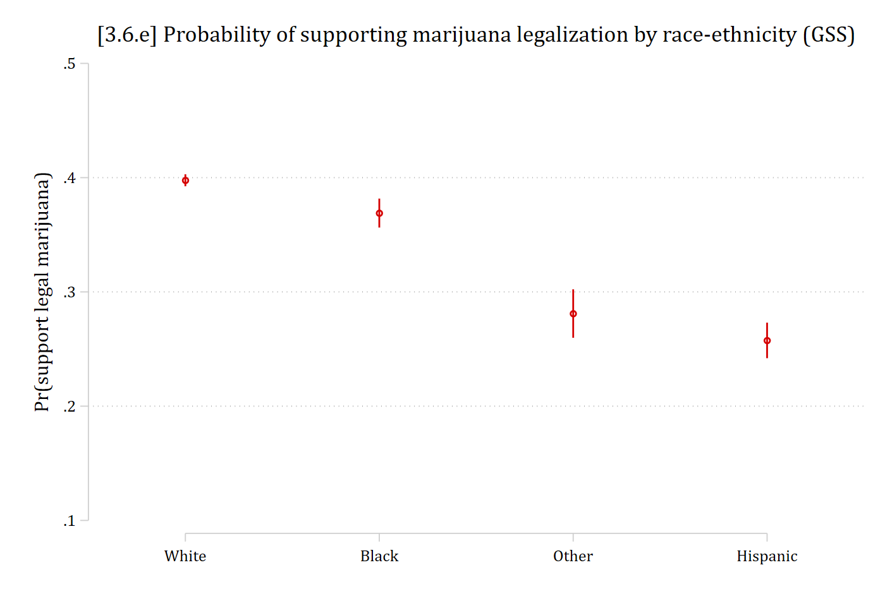
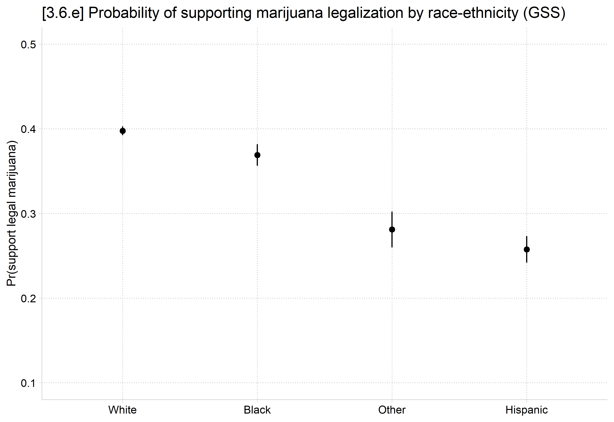

Starting and ending values of the focal IV \(x_{k}\) can be any values of substantive interest. For binary IVs, there are only two logical choices: 0 and 1
lab def glab 0"not be legal" 1 "should be legal"lab val grass glab* Create year since 1975 variablegen year1975 = year - 1975lab var year1975 "years since 1975"quilogit grass c.age c.year1975##c.year1975 i.conserv /// c.faminc i.degree i.woman i.race4, oreststore mjmod* marginal effectsfor focal variablesmecompare conserv, models(mjmod)
Predicting: Pr(grass)
Marginal effects (N_mjmod=34466)
| ME # Estimate SE P>|z|
---------------------------------+---------------------------------------
conserv |
Conservativ - Not Conser |
mjmod | 1 -0.153 0.005 0.000
library(haven) # import Stata data and labelslibrary(dplyr) # data manipulationlibrary(ggplot2) # graphslibrary(marginaleffects) # predictions and marginal effectslibrary(cleanplots) # graph schemecleanplots_defaults()source("https://raw.githubusercontent.com/tdmize/Rfunctions/main/ME_helper_functions.R")# Center changes in continuous IVs on each observation's valueoptions(marginaleffects_contrast_direction ="center")gss <-read_dta("https://tdmize.github.io/data/data/cda_gss22.dta")# Drop any missing data on model varsgss <- gss[complete.cases(gss[c("grass", "age", "conserv", "faminc", "college","woman", "race4")]), ]# Create year since 1975 variable; treat binary/nominal variables as factorsgss <- gss |>mutate(year1975 =as.numeric(year) -1975,conserv =as_factor(conserv), degree =as_factor(degree),woman =as_factor(woman), race4 =as_factor(race4)) |>droplevels()mjmod <-glm(grass ~ age +poly(year1975, 2, raw =TRUE) + conserv + faminc + degree + woman + race4, data = gss, family =binomial(link ="logit"))# marginal effects for focal variablesavg_comparisons(mjmod, variables ="conserv")
Estimate Std. Error z Pr(>|z|) S 2.5 % 97.5 %
-0.153 0.00483 -31.7 <0.001 732.4 -0.163 -0.144
Term: conserv
Type: response
Comparison: Conservative - Not Conservative
On average, conservatives have a .15 lower probability of supporting marijuana legalization than do non-conservatives
Different wording:
Conservatives are about 15 percentage points less supportive of marijuana legalization, compared to non-conservatives
You may also want to report the actual conditional probabilities for each category of the binary IV, rather than just the difference out of context
Note you still want to refer to the significance test of the marginal effect. E.g.,
* show each predictions for each category of focal binary IVestrestore mjmod
(results mjmod are active now)
margins conserv
Predictive margins Number of obs = 34,466
Model VCE: OIM
Expression: Pr(grass), predict()
-------------------------------------------------------------------------------
| Delta-method
| Margin std. err. z P>|z| [95% conf. interval]
--------------+----------------------------------------------------------------
conserv |
Not Conser.. | 0.433 0.003 145.163 0.000 0.427 0.439
Conservative | 0.279 0.004 74.284 0.000 0.272 0.287
-------------------------------------------------------------------------------
# show each predictions for each category of focal binary IVavg_predictions(mjmod, variables ="conserv", by ="conserv")
conserv Estimate Std. Error z Pr(>|z|) S 2.5 % 97.5 %
Not Conservative 0.433 0.00298 145.2 <0.001 Inf 0.427 0.439
Conservative 0.279 0.00376 74.3 <0.001 Inf 0.272 0.287
Type: response
The predicted probability of supporting marijuana legalization for non-conservatives is about 0.43 — compared to a significantly lower predicted probability of about 0.28 for conservatives (M.E. = -0.15 , p < 0.001)
Interpretation tip: To refer to a marginal effect, I often just use ME or M.E. in text. A capital ∆ (Delta) is another common notation.
Interpreting marginal effects for continuous IVs
For continuous IVs, can interpret a one-unit discrete change, a one standard deviation discrete change, or the instantaneous rate of change (slope)—or another custom \(\delta\) amount (e.g., +10 years of age)
I generally default to +SD absent a theoretically informed choice
age year1975
Min. :18.00 Min. : 0.00
1st Qu.:32.00 1st Qu.:12.00
Median :43.00 Median :23.00
Mean :46.02 Mean :23.55
3rd Qu.:59.00 3rd Qu.:37.00
Max. :89.00 Max. :47.00
Term Contrast Estimate Std. Error z Pr(>|z|) S 2.5 % 97.5 %
age +17.1926477284996 -0.0764 0.00246 -31.0 <0.001 698.2 -0.0812 -0.0716
year1975 +14.6102673252095 0.1570 0.00237 66.3 <0.001 Inf 0.1524 0.1617
Type: response
On average, a standard deviation increase in age (about 17 years) is associated with being about 8 percentage points less supportive of marijuana legalization
Samples collected about 15 years later (\({ME}_{year + SD}\)), are about 16 percentage points more supportive of legalizing marijuana than earlier samples
Marginal effects at specific values of interest
Year is a variable with meaningful values
A SD increase is somewhat awkward for a year variable
Effects across the entire range or trimmed range (5th to 95th percentile) are informative here
Support for marijuana legalization has changed dramatically over the years of the GSS. Since the question began being asked in 1975, to the latest survey in 2022, support for legalization has increased by almost 55 percentage points
AME vs MEM: Which should you use?
While MEMs and AMEs are usually quite similar in size, the MEM and AME are not identical for categorical DV models
Estimate Std. Error z Pr(>|z|) S 2.5 % 97.5 %
-0.0764 0.00246 -31 <0.001 698.2 -0.0812 -0.0716
Term: age
Type: response
Comparison: +17.1926477284996
Hanmer and Kalkan (2013 AJPS) show that there are situations where AME and MEM diverge and that the AME tends to perform better. However, in my experience they are almost identical and if you do find differences this is likely due to an idiosyncrasy in your data rather than a real substantive difference in the effect of your IV. Absent a meaningful difference between the two, I prefer the AME as the interpretation is more straightforward, less cumbersome, and more satisfying
Logit vs probit revisited: AMEs*
Correlation(logit, probit)
betas
0.9995
z-stat on beta
0.9980
AMEs
0.9997
z-stat on AMEs
0.9992
Ratio(logit / probit)
betas
1.7819
z-stat on beta
0.9816
AMEs
1.0269
z-stat on AMEs
1.0139
AMEs are all but identical across logit and probit
z statistics on AMEs are very similar across logit and probit
If predictions and/or marginal effects are of interest: the choice of whether to use logit or probit does not matter
The identifying assumption about the variance of the errors has almost no influence on predictions or marginal effects
*NOTE: The table above is based on the models predicting support for Trump shown earlier
* plot predictions for each categoryestrestore mjmod
(results mjmod are active now)
qui margins race4, postcoefplot, vertical ylab(.1(.1).5) ytitle("Pr(support legal marijuana)") ///title("[3.6.e] Probability of supporting marijuana legalization by race-ethnicity (GSS)")

# plot predictions for each categoryplot_predictions(mjmod, by ="race4",newdata =datagrid(race4 = unique, grid_type ="counterfactual")) +scale_y_continuous(breaks =seq(.1, .5, .1), limits =c(.1, .5)) +labs(title ="[3.6.e] Probability of supporting marijuana legalization by race-ethnicity (GSS)",x =NULL, y ="Pr(support legal marijuana)")

I always present the graph of predictions for a nominal IV, as it does not have a reference category / gives each group an equal amount of visual emphasis
The default interpretation for nominal IVs is generally to compare the prediction for each included category to an omitted reference category
But reference category is often arbitrary
And other contrasts are of interest
To avoid a reference category, compute all pairwise comparisons of predictions. Each pairwise comparison is a marginal effect
\[pairwise\ comparisons = ME = \eta(x_{k} = a, \mathbf{x}_{-k} = \mathbf{x}_{-k}^{*}) - \eta(x_{k} = b, \mathbf{x}_{-k} = \mathbf{x}_{-k}^{*});\ for\ all\ b > a\]
Individuals from different racial-ethnic groups differ by about 9 percentage points, on average, in their support for legalizing marijuana (p < .001)
Summary of marginal effects
A summary measure of the “effect” of a variable is often useful
For linear additive effects in linear regression models the estimated coefficients are usually used (coefficient = ME; but only in this special case)
For nonlinear effects the regression coefficients do not directly indicate the magnitude of the effect in the natural metric of the DV
In the binary logit model odds ratios are often used, but are limited in their interpretability as discussed above
In most cases, measures of the change in the probability for a change in an IV (i.e., marginal effects) are the most helpful and intuitive way to summarize the effect
AME and MEM are generally almost identical; I prefer AME as a single measure in most cases due to its more elegant/satisfying interpretation
However, when there are meaningful or theoretically important values of your IVs to examine you should examine the effects at these values
Summary measures are only summaries and average over what may be important variation in the effect of interest